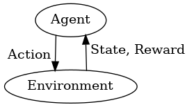
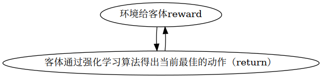

强化学习 – 基础
1 强化学习中的术语
digraph agent_environment {
forcelabels=true
splines=false
"Agent"[shape="ellipse"]
"Environment"[shape="ellipse"]
"Agent":sw->"Environment":nw[dir=forward, xlabel=" Action "]
"Environment":ne->"Agent":se[dir=backward, xlabel=" State, Reward "]
}

强化学习中的主要角色是 客体（Agent） 和 环境（Environment） ，环境就是此客体生存、可以进行交互的世界。客体和环境的每次交互时，客体会根据环境的状态决定下一个要执行的 动作（Action） ，而环境也会随着客体进行的动作进行相应的改变。客体还会收到来自环境的信号 反馈（reward） ，告诉客体当前环境的状态是好是坏；客体的目标是最大化这种累积的信号反馈（reward），这个过程叫做 客体反馈（return） 。强化学习就是客体不断从行为（反馈）中学习从而实现自己的目标的过程。
digraph reward {
"环境给客体reward" -> "客体通过强化学习算法得出当前最佳的动作（return）" -> "环境给客体reward"
}

1.1 状态（States）和观察（observations）
状态（States）是对当前环境的最全面的描述，当前环境的所有信息都必须描述在状态中；而观察（Observation）只是当前状态的不全面的描述，可能会遗漏一些环境的信息。当客体能够观察到当前环境的所有信息，称为全面了解（fully observed），否则，称为部分了解（partially observed）。
二者之间是有区别的。从理论上来分析，客体的动作应该根据环境的状态（Status）改变，但在实际情况中，客体只能通过观察来改变动作，因为客体是无法全面的了解环境的状态的。
1.2 动作集（Action Spaces）
不同的环境包含有不同种的动作，给定环境中所有合法的状态被称为这个环境的动作集。 在某些环境中，比如AlghaGo，它的动作集是离散的，包含一些有限的数代表客体可以移动的步数，这种动作集称为 离散动作集（disecret action spaces） ；而其他的环境（控制机器人在一块平地上追某个目标）中的动作集是持续性的，被称为 持续动作集（continuous action spaces） ，持续动作集中的动作用向量表示。
1.3 决策（Policy）
决策是客体用来决定下一步采取什么动作（Actions）的规则。它可以是确定的，被\(\mu\)代表的函数决定： \[ a_t = \mu(s_t) \] 也可以是随机的： \[ a_t = \pi(\cdotp|s_t) \]
由于决策在本质上就是客体的“大脑”所做的决定，因此也经常把可以用决策来代替。
强化学习中，我们只处理参数化的决策，所谓参数化的决策，就是接受一堆参数（环境中获取）的可计算的函数，之后可以通过优化算法去调整客体的行动。
1.3.1 随机决策（Stochastic Policies）
RL中最常见的随机决策方法有：分类决策（categories policies）和对角高斯决策（diagonal Gaussian policies）。
使用和训练随机决策有两个很重要的步骤：
- Sampling 从决策中抽出接下来可以进行的动作
- Log-Likelihood 计算每个动作的对数似然性
1.3.1.1 分类决策（Categorical Policies）
分类决策就像是个筛子，对离散的动作进行筛选，经过不同的中间步骤，把不同的离散动作筛选出来。最终返回一个线性对应关系（动作和此动作的概率）。
- Sampling
- Log-Likelihood
1.3.1.2 TODO 对角高斯决策（Diagonal Gaussian Policies）
多变量高斯分布（或者多变量正太分布）由平均向量（mean vector）和协方差（covariance matrix）描述。对角高斯分布是一种特殊情况，其中协方差矩阵仅在对角线上具有条目。因此，我们可以用矢量表示它。
… 看不懂
1.3.2 轨迹（Trajectories）
轨迹\(\tau\)表示状态和动作的一组序列： \[ \tau = (s_0, a_0, s_1, a_1, ...) \]
环境最初的状态 \(s_0\) ，从起始状态分布中随机抽样，有时用\(\rho_0\)定义 \[ s_0 \sim \rho_0 \]
状态转移（状态随时间变化由\((t, s_t)\)转变为\((t+1, s_{t+1})\)）受到环境的约束，并且只取决于最近的动作，可以是确定的： \[ s_{t+1} = f(s_t, a_t) \] 也可以是随机的： \[ s_{t+1} \sim P(\cdotp|s_t, a_t) \]
1.3.3 TODO 反馈和返回（Reward & Return）（没有理解这个段落，翻译不来）
反馈（Reward）在RL中相当重要，它取决于当前环境的状态，客体此刻采取的动作以及接下来环境的状态： \[ r_t = R(s_t, a_t, s_{t+1}) \] 但也经常简化为只依赖于当前状态和客体此刻的动作（感觉本来就该如此）\(r_t = R(s_t, a_t)\)
客体的目标是最大化这种累积的信号反馈，记作\(R(\tau)\)。一种返回是有限但未计数的返回（finite-horizon undiscounted return），只是在固定窗口的步骤中获取的反馈之和（sum of rewards）： \[ R(\tau) = \sum_{t=0}^{T} r_t \]
另一种返回是无限期discounted返回（infinite-horizon discounted return），它是客体获得的奖励的总和，但是通过他们获取的未来距离来discount，这种奖励形式discount因子：\( \gamma \in (0, 1) \) \[ R(\tau) = \sum_{t=0}^{\infty} \gamma^{t}r_t \]
Why would we ever want a discount factor, though? Don’t we just want to get all rewards? We do, but the discount factor is both intuitively appealing and mathematically convenient. On an intuitive level: cash now is better than cash later. Mathematically: an infinite-horizon sum of rewards may not converge to a finite value, and is hard to deal with in equations. But with a discount factor and under reasonable conditions, the infinite sum converges
1.4 RL解决的问题
不管选择的返回方法（return measure）是什么，也不管选择的策略（policy）是什么，RL要解决的是：当客体选择某个动作之后，RL选择一个能使期待反馈（expect return）结果最优的策略（policy）。
假设当前环境下状态的转变（transitions）和策略（policy）都是随机的，那么T步轨迹的概率是： \[ P(\tau|\pi) = \rho_0 (s_0) \prod_{t=0}^{T-1} P(s_{t+1} | s_t, a_t) \pi(a_t | s_t) \]
预计返回结果： \[ J(\pi) = \int_{\tau} P(\tau|\pi) R(\tau) = \underE{\tau\sim \pi}{R(\tau)} \]
RL的中心优化问题可以表示为： \[ \pi^* = \arg \max_{\pi} J(\pi) \] \(\pi^*\)被称做最优策略。
1.5 值函数
RL中知道一个状态，或者是状态-动作键值对映射是很有用的。有了描述上诉关系的值函数，之后就能根据特定的策略来执行接下来的动作。几乎每个RL算法都会这样实现。
- On-Policy Value Function：从一个状态开始一直依据策略进行下一步动作，会获得预期的结果
- On-Policy Action-Value Function：从一个状态开始，采取任意的动作（不管这个动作是否是通过策略获得到的），都会得到预期的结果
- Optimal-Value Function：从一个状态开始一直依据 最佳 策略进行下一步动作，获得预期结果
- Optimal Action-Value Function：从一个状态开始，采取任意的动作（不管这个动作是否是通过最佳策略获得到的），都会得到预期的结果